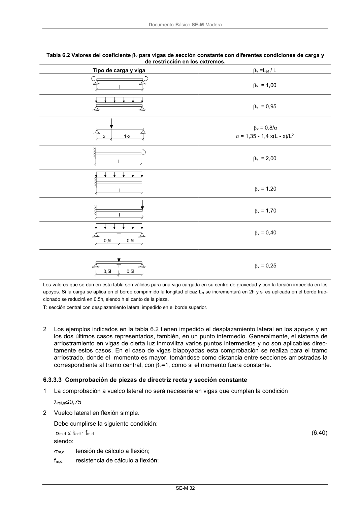

DB-SE-M · 6.3.3.3 Comprobación de piezas de directriz recta y sección constante · versión 2019-12-20
SHA256: 26b5819839ebfda78b0b119c5e76a0a37773b0d763c05688541870075df93718 · página física 38 de 132 · métodos de encabezado
solo si están cotejados.
Formatos: Markdown · JSON de bloques · PDF p. 38 · imagen PNG
Documento Básico SE-M Madera SE-M 32 Tabla 6.2 Valores del coeficiente v para vigas de sección constante con diferentes condiciones de carga y de restricción en los extremos. Tipo de carga y viga v =Lef / L v = 1,00 v = 0,95 v = 0,8/ = 1,35 - 1,4 x(L - x)/L2 v = 2,00 v = 1,20 v = 1,70 v = 0,40 v = 0,25 Los valores que se dan en esta tabla son válidos para una viga cargada en su centro de gravedad y con la torsión impedida en los apoyos. Si la carga se aplica en el borde comprimido la longitud eficaz Lef se incrementará en 2h y si es aplicada en el borde trac- cionado se reducirá en 0,5h, siendo h el canto de la pieza. T: sección central con desplazamiento lateral impedido en el borde superior. 2 Los ejemplos indicados en la tabla 6.2 tienen impedido el desplazamiento lateral en los apoyos y en los dos últimos casos representados, también, en un punto intermedio. Generalmente, el sistema de arriostramiento en vigas de cierta luz inmoviliza varios puntos intermedios y no son aplicables direc- tamente estos casos. En el caso de vigas biapoyadas esta comprobación se realiza para el tramo arriostrado, donde el momento es mayor, tomándose como distancia entre secciones arriostradas la correspondiente al tramo central, con v=1, como si el momento fuera constante. 6.3.3.3 Comprobación de piezas de directriz recta y sección constante 1 La comprobación a vuelco lateral no será necesaria en vigas que cumplan la condición rel,m≤0,75 2 Vuelco lateral en flexión simple. Debe cumplirse la siguiente condición: m,d kcrit · fm,d (6.40) siendo: m,d tensión de cálculo a flexión; fm,d. resistencia de cálculo a flexión;
